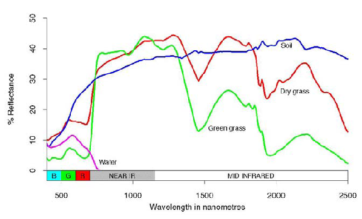

The main objective of this lab is focus on the spectral reflectance pattern of different objects of the earth surface. Remote sensing satellite imagery, typically shows various gradients of coloured features, formed from the captured reflectance of different objects.
This variation in reflectance curves by each object helps in their identification and distinguishing them from other. At the end, this lab will familiarize the users with different spectral curves and how they differ in the electromagnetic spectrum depending on the object and thus how to differentiate similar objects spatially and temporally.

Ref:http://wamis.org/agm/pubs/agm8/Paper-2.pdf
Detection and discrimination of objects or surface features means detecting and recording of radiant energy reflected or emitted by objects or surface material. Different objects return different amount of energy in different bands of the electromagnetic spectrum, incident upon it. This depends on the property of material (structural, chemical, and physical), surface roughness, angle of incidence, intensity, and wavelength of radiant energy.
Spectral reflectance is the ratio of reflected energy to incident energy as a function of wavelength. Various materials of the earth’s surface have different spectral reflectance characteristics. Spectral reflectance is responsible for the color or tone in a photographic image of an object. Trees appear green because they reflect more of the green wavelength. The values of the spectral reflectance of objects averaged over different, well-defined wavelength intervals comprise the spectral signature of the objects or features by which they can be distinguished. To obtain the necessary ground truth for the interpretation of multispectral imagery, the spectral characteristics of various natural objects have been extensively measured and recorded.
The spectral reflectance is dependent on wavelength, it has different values at different wavelengths for a given terrain feature. The plot between spectral reflectance at particular wavelength and energy reflected from the object is called a spectral reflectance curve. This varies with the variation in the chemical composition and physical conditions of the feature, which results in a range of values. The spectral response patterns are averaged to get a generalized form, which is called generalized spectral response pattern for the object concerned. Spectral signature is a term used for unique spectral response pattern, which is characteristic of a terrain feature. Figure 5 shows a typical reflectance curves for three basic types of earth surface features, healthy vegetation, dry bare soil (grey-brown and loamy) and clear lake water.

Reflectance Characteristics of Earth’s Cover types
The spectral characteristics of the three main earth surface features are discussed below:
Vegetation: The spectral characteristics of vegetation vary with wavelength. Plant pigment in leaves called chlorophyll strongly absorbs radiation in the red and blue wavelengths but reflects green wavelength. The internal structure of healthy leaves acts as diffuse reflector of near infrared wavelengths. Measuring and monitoring the near infrared reflectance is one way that
Scientists determine how healthy particular vegetation may be.
http://spacegrant.nmsu.edu/statewide/projects/remote_sensing.pdf The shape of the reflectance spectrum can be used for identification of vegetation type. For example, the reflectance spectra of dry grass and green grass in the previous figures can be distinguished although they exhibit the generally characteristics of high NIR but low visible reflectance. Dry grass has higher reflectance in the visible region but lower reflectance in the NIR region. For the same vegetation type, the reflectance spectrum also depends on other factors such as the leaf moisture content and health of the plants. These properties enable vegetation condition to be monitored using remotely sensed images.
|  |
 |
Water: Majority of the radiation incident upon water is not reflected but is either absorbed or transmitted. Longer visible wavelengths and near infrared radiation is absorbed more by water than by the visible wavelengths. Thus water looks blue or blue green due to stronger reflectance at these shorter wavelengths and darker if viewed at red or near infrared wavelengths. The factors that affect the variability in reflectance of a water body are depth of water, materials within water and surface roughness of water.
Soil: The majority of radiation incident on a soil surface is either reflected or absorbed and little is transmitted. The characteristics of soil that determine its reflectance properties are its moisture content, organic matter content, texture, structure and iron oxide content. The soil curve shows less peak and valley variations. The presence of moisture in soil decreases its reflectance.
By measuring the energy that is reflected by targets on earth’s surface over a variety of different wavelengths, we can build up a spectral signature for that object. And by comparing the response pattern of different features we may be able to distinguish between them, which we may not be able to do if we only compare them at one wavelength. For example, Water and Vegetation reflect somewhat similarly in the visible wavelength but not in the infrared.

- In this experiment you are provided with a wavelength slider according to which you can adjust the wavelength emmited by the spectrometer to the object placed on the table. You are provoded with four such objects.
- Start the experiment by selecting wavelength from slider.Reflected ray will be captured by the lens of the spectrometer and reflectance is calulated.
- Take observations and fill them in the boxes against wavelength and reflectance, provided in the parallel pane, and mark the points.
- Likewise mark atleast 5-6 points and generate graph.
- Now, press Compare button to compare your observed graph with the original graph.


Q1.
Vegetation shows high absorption of
a. Red light
b. Blue light
c. Green light
d. Red and Blue light
Q2.
Vegetation appears green in colour due
a. Absorption of green light
b. Reflectance of green light
c. Absorption of red light for photosynthesis
d. Scattering of green light
Q3.
A healthy vegetation reflects
a. Near Infra red
b. Red light
c. Green light
d. None
Q4.
Longer visible wavelengths are absorbed by water
a. True
b. False
Q5.
Water appears dark in colour at ______ and ____________ wavelengths
a. red, blue
b. red, near infrared
c. blue, green
d. voilet, blue
Q6.
The presence of moisture in soil
a. Decreases its Reflectance
b. Increases its absorption
c. Increases its reflectance
d. Decreases its absorption
Q7.
A stressed vegetation reflectance of
a. Increase reflectance in Red
b. Less absorption of blue and red
c. High reflectance of green light
d. a and b
Q8.
Water has higher absorption at
a. Blue
b. Green
c. Near Infra red
d. a & b
Q9.
Increase in chlorophyll concentration decrease water reflectance in blue wavelengths and increases in green wavelengths
a. True
b. False
Q10.
10. The dips in the reflectance pattern for vegetation at 1.4, 1.9 and 2.7 µm is due to their _____________ by water in the leaves
a. Absorption
b. Reflection
c. Emission
d. None

Please provide feedback for the experiment.